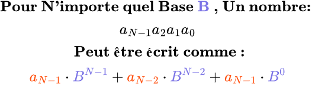
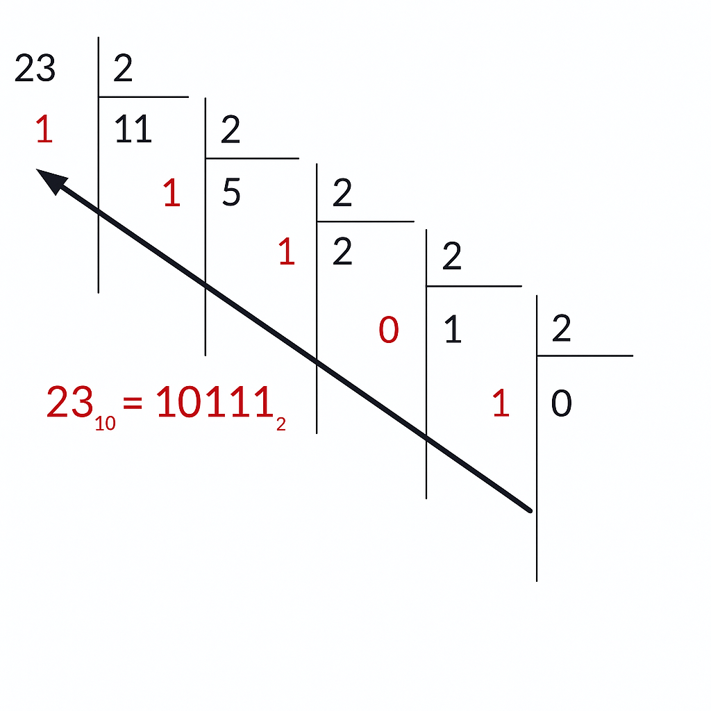
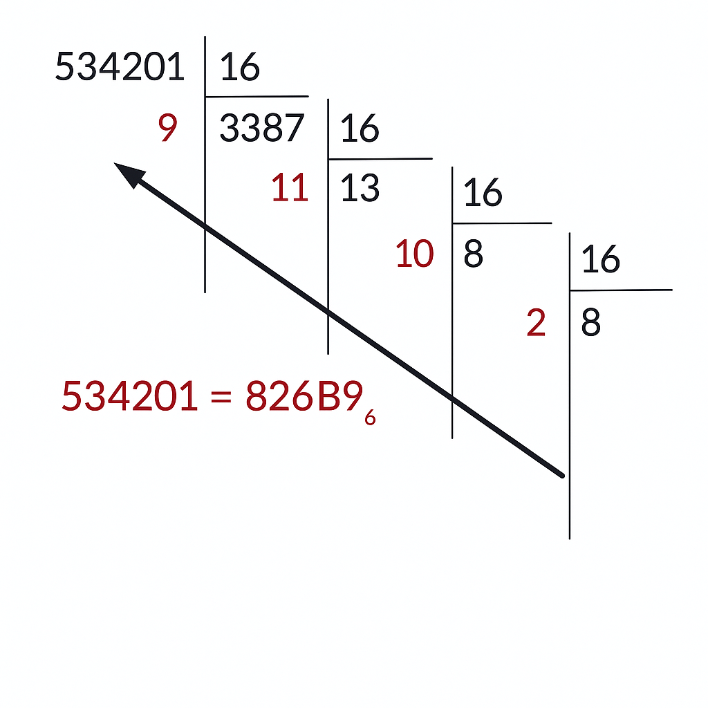

Conversion de base :
Une base est simplement un indicateur du nombre de symboles que l’on utilise pour écrire les nombres.
Nous utilisons normalement la base 10 , donc nous avons 10 symboles :
0, 1, 2, 3, 4, 5, 6, 7, 8, 9
La base 2 utilise deux symboles : 0 et 1
La base 8 utilise huit symboles : de 0 à 7
Pour les bases supérieures à 10 , on utilise des lettres pour représenter les nouveaux symboles.
Par exemple, la base 16 contient 16 symboles :
0
à
9
puis
A
,
B
,
C
,
D
,
E
,
F
Comprendre l’écriture des nombres :
En base 10, le nombre 657 s’écrit :
600
+
50
+
7
qu’on peut réécrire sous forme de puissances :
6
× 10² +
5
× 10¹ +
7
× 10⁰
(puisque x⁰ = 1 pour tout x ≠ 0)
Un nombre comme 1101 en binaire (base 2) s’écrit :
1
× 2³ +
1
× 2² +
0
× 2¹ +
1
× 2⁰
8
+
4
+
0
+
1
=
13
On observe donc un schéma clair ici.

Conversion de base 10 vers une autre base B :
On convertit un nombre décimal vers une autre base.
On le fait en divisant continuellement le nombre par la base, jusqu’à ce qu’on atteigne un quotient égal à 0 .
Ensuite, on lit les restes à l’envers pour obtenir le nombre dans la nouvelle base.
Exemple : convertir 23 en binaire (base 2) :

Exemple : convertir 834201 en hexadécimal (base 16) :
